05 — Rocketry · Systems Integration · NUStars
An aerodynamic camera housing developed from Preliminary Design Review through a competition flight in Huntsville, AL — capturing continuous in-flight footage that provided the first visual confirmation of active drag system actuation.
Objective
The NUStars NASA Student Launch vehicle carries an active drag control system whose actuation had never been visually confirmed in flight. An onboard camera would provide this verification — but mounting a camera externally at transonic speeds introduces drag, potential stability reduction, and structural risk. The design had to solve all three problems simultaneously.
The RunCam Split 4 V2 was selected because it physically separates the lens module from the recording PCB — only the small lens protrudes through the airframe surface, while the electronics stay inside. Recording was deliberately decoupled from the vehicle's telemetry system, making the camera operate independently on a timer regardless of avionics state.
PDR — Sep–Oct 2024
The housing was shaped as a reverse-airfoil to smoothly redirect airflow around the lens rather than creating a blunt obstruction. Heat-set inserts and M2 screws provide secure PCB attachment without separate hardware. The PDR also explored multiple housing iteration geometries to find the profile with the lowest aerodynamic penalty while providing sufficient structural support for the lens module.
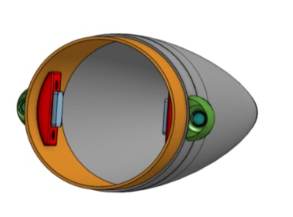
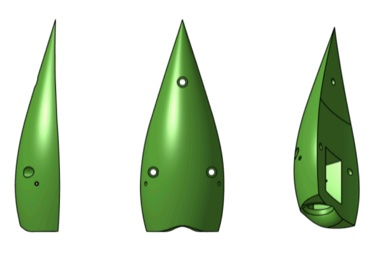
PDR interior layout — camera and PCB positioning inside nose cone coupler (left) · early housing iterations exploring reverse-airfoil profiles (right)
CDR — Oct 2024 – Jan 2025
Material testing evaluated Nylon 12, ABS, and PLA across multiple infill densities and print orientations. ABS on the Bambu X1 Carbon was selected for dimensional stability and impact resistance. An FMEA was developed to incorporate redundancies into the electrical and mechanical integration.
OpenRocket stability analysis with and without the camera housing confirmed a reduction of less than 1.5 calibers in stability margin — within acceptable limits for competition flight.
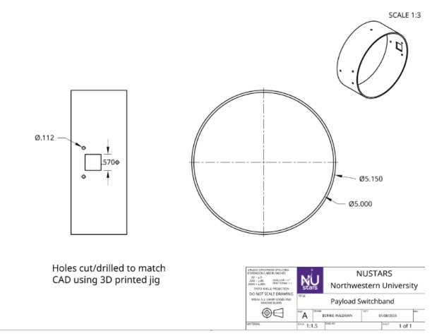
Switchband engineering drawing — camera housing interface dimensions and hole location
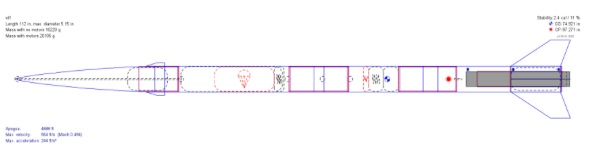
OpenRocket Stability — baseline vs. camera installed. Stability reduction: less than 1.5 calibers.
Manufacturing — Jan–Apr 2025
To maintain aerodynamic balance, two housings were installed on opposite sides of the switchband — only one contains an active camera. The lens passthrough required a precise 0.55 × 0.55 inch square hole through the fiberglass switchband. A 3D-printed drilling jig constrained the Dremel to the correct location and orientation, preventing fiber delamination from free-hand cutting.
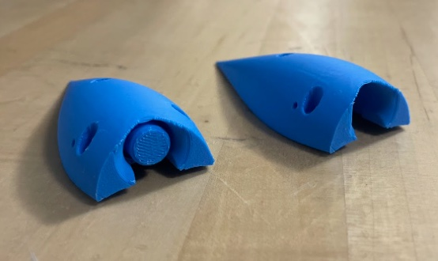
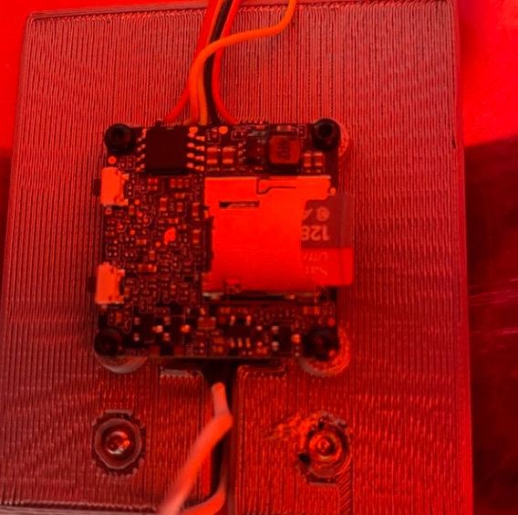
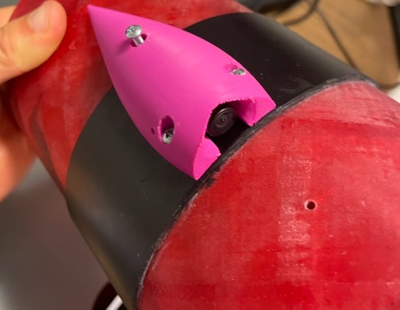
Early ABS prototype housings (left) · PCB affixed to mount with heat-set inserts (center) · final housing mounted on switchband with lens seated (right)
Flight Testing & Competition
Flight Test #1 produced the result the team had been working toward: review of the footage confirmed that the active drag control system was actuating during flight — the first visual verification the team had achieved. The same footage revealed a parachute charge sizing discrepancy that was corrected before competition. A subsequent power surge issue was diagnosed and mitigated for the competition flight.
At the NASA Student Launch competition in Huntsville, AL, the camera recorded a complete, uninterrupted flight from launch through recovery.
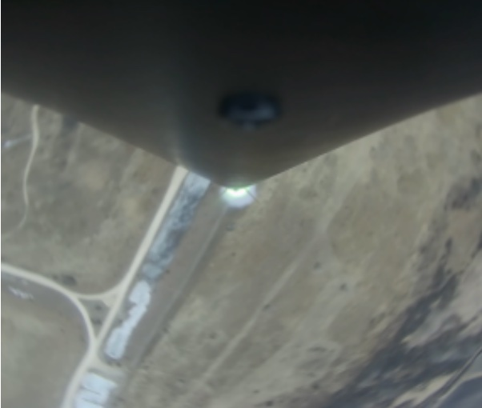
Frame from in-flight footage — captured during Flight Test #1 at altitude
Final Design Documentation
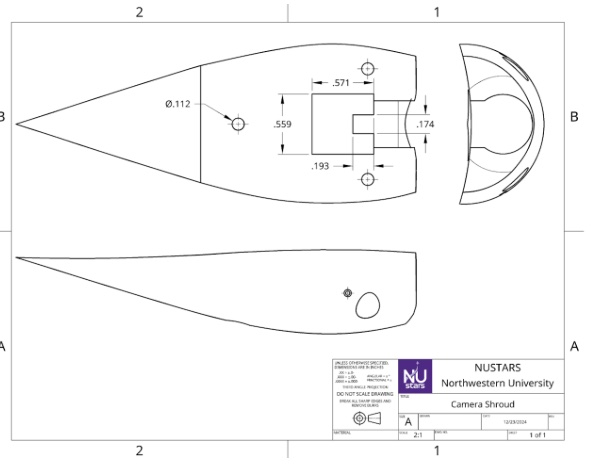
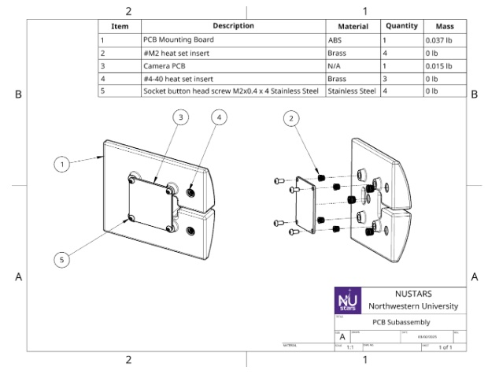
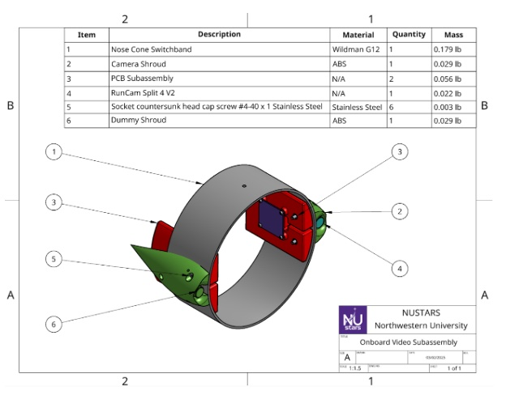
Camera shroud drawing (left) · PCB subassembly drawing (center) · full onboard video subassembly: switchband, shroud, and PCB integration (right)
Reflection
The system successfully captured in-flight footage throughout the entire NASA Student Launch season — and the footage immediately proved useful for diagnosing behavior that telemetry alone could not confirm. Building diagnostic capability into a rocket is worth the weight penalty.
Decoupling camera recording from vehicle telemetry was the right call. It removed a single point of failure and simplified pre-flight setup — the camera was just always on, always recording, regardless of what the flight computer was doing.
Roll-induced motion produced disorienting footage — pointing to the need for either improved roll damping in the vehicle design or post-processing stabilization. As a next step, a second outward-facing camera could provide broader visual context for analyzing flight dynamics and control system performance.